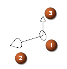
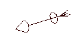
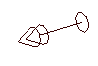

端口是已审核部件中最基本的对象，在与其它已审核部件、型材或者管线路径之间作为关联的连接点，一共有两种类型的端口：
连接件端口放置在一个部件中使之可以用于管线布置。它们用于部件放置与对齐，也用于部件定向(clocking)。端口也作为路径的连接点。
当在路径中添加型材时，它将被修剪以匹配端口。
|

|
原点
对齐矢量
方位矢量(可选)
固定件端口是支撑型材，但不会对型材进行修剪的连接。例如，吊钩中在管道通路的轴方向包含一个固定端口，路径将会穿过固定端口的对齐矢量。

多个端口用在电气管线布置中，用于指定引脚连接。

创建端口时，您可以接受 NX 提供的默认名称，也可以将它修改成您想要的名称。